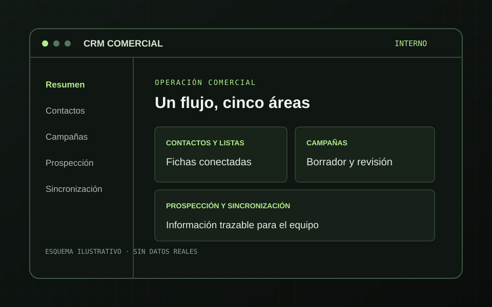

Fichas y Listas Conectadas
Búsqueda, edición y trabajo por lotes en el CRM. Las listas permiten revisar miembros y abrir la ficha de un contacto existente.
CRM · listas · CSVDesarrollé un CRM interno para que una empresa B2B pudiera trabajar con contactos, listas, campañas y oportunidades desde el navegador. La entrega incluyó una aplicación instalable, código fuente y documentación para el equipo técnico.
El trabajo abarcaba fichas CRM, listas y campañas de email, prospección y seguimiento de sincronizaciones. El equipo necesitaba consultar esas áreas y actuar sobre ellas desde una interfaz interna, con diferencias claras entre revisar información, preparar un borrador y autorizar un envío.
La entrega también tenía que ser mantenible: ejecutable para Windows, datos operativos, manual para usuarios, documentación técnica y código fuente de la misma versión.
La interfaz y la API se sirven desde el mismo proceso. La plataforma de email se integra por HTTPS; una base de datos local conserva el estado operativo y el historial necesario para consulta y seguimiento.
Búsqueda, edición y trabajo por lotes en el CRM. Las listas permiten revisar miembros y abrir la ficha de un contacto existente.
CRM · listas · CSVLas campañas enviadas se consultan en tarjetas; los borradores y las programaciones tienen acciones diferenciadas y requieren revisión antes del envío.
Histórico · edición · controlImportación, asignación, depuración de duplicados y promoción a contacto, junto a una pantalla de sincronización con estado de trabajos.
Leads · conciliación · jobs
El paquete incluyó aplicación, base operativa, manuales, código y manifiestos de integridad. Las comprobaciones de entrega quedaron registradas antes del empaquetado.
El ejecutable arrancó y respondió con la versión entregada en una prueba aislada.
Suite local de seguridad y regresión completada en el cierre de entrega.
Comprobación de integridad de las bases incluidas en el paquete.
Trabajos programados con estado consultable, copia de seguridad automática e instrucciones de mantenimiento para informática.
La fuente, el ejecutable, la guía de usuario y la documentación técnica corresponden a la versión entregada.
La documentación acredita el paquete y sus pruebas de entrega. La instalación en el servidor de destino y los resultados comerciales posteriores no se presentan aquí como hechos verificados. La identidad del cliente se mantiene reservada.
Un panel útil debe explicar qué dato muestra, qué acción cambia el estado y qué requiere validación humana. Por eso la aplicación separa consulta, borrador, prueba autorizada y envío.
La entrega se preparó como un sistema que otro equipo técnico puede instalar, revisar y actualizar sin depender de una copia de desarrollo.
Cuéntame qué herramientas utilizáis y dónde se pierde tiempo o visibilidad. Podemos definir un flujo que tu equipo pueda usar y mantener.
Hablemos del proyecto